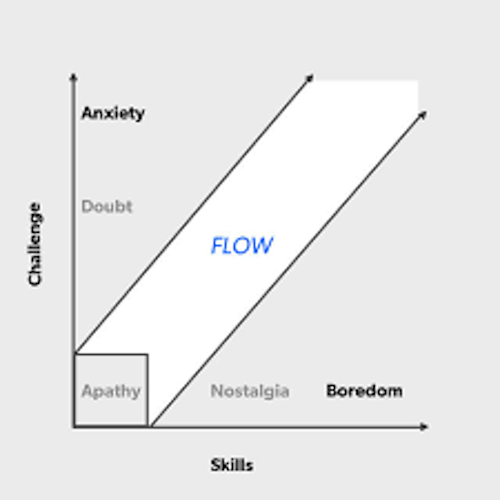

My advice and expertise on how to avoid burnout and keep on keepin' on!
My Experience with Burnout
I’ve experienced burnout in a variety of activities and have generated many unfair stigma as a result. One example is my relationship with Machine Learning. Even though I know that ML is a growing field and that I’ll be directly working with it in some capacity in the future, I still get a sour look in my eye whenever it comes up in conversation. This is because the few times I’ve dabbled with it, I’ve felt like a 4 year-old trying to make a Duck Pâté en Croûte with a spoon and a lighter.
I have the same relationship with swimming. Although I wouldn’t die without a life jacket in the middle of a kiddie pool, I wouldn’t be putting down hot laps back-to-back either. And by that I mean that I have to pull my head up for a few second to breath in and out when I swim instead of being able to turn my head and circulate air into my lungs—like a normal person. But because of the initial difficult I experienced when trying to learn how to swim, I never went back to put in the effort required to gain mastery in the aquatic means of mobility.
Why Burnout Occurs
With a quick Google search, you can find this definition:
Burnout is a state of emotional, physical, and mental exhaustion caused by excessive and prolonged stress. It occurs when you feel overwhelmed, emotionally drained, and unable to meet constant demands.
So in layman’s terms, “burnout” occurs when the going gets unbearably tough and our body/mind can’t keep up. In my case, this often occurred from me metaphorically slamming my head against a wall and then eventually passing out from blood loss. I like this metaphor because it highlights what I think are the two main causes of burnout: lack of instant gratification and constant overexertion. When you make love to a wall with your forehead in a woodpecker-esque manner, not only are there no immediate signs of progress (save the blood dripping from your head), but the amount of work (not the physics kind) you’re putting in is not sustainable for a long period of time.
My 3 Ways of Avoiding Burnout
Okay, so I’ve given you a couple examples of burnout in my life and described what I think are the two main causes, but how can we avoid burnout in our everyday lives? Before I offer my 3 ways of avoiding burnout, I want to disclaim that these are what have worked for me and that I do not have a certain piece of paper crediting everything that comes out of my mouth (figuratively) with respect to Psychology. With that in mind, let’s get right into it.
Maintaining Flow State
In positive psychology, a flow state, also known colloquially as being in the zone, is the mental state in which a person performing some activity is fully immersed in a feeling of energized focus, full involvement, and enjoyment in the process of the activity.
Sounds awesome, right? Right. In my mind, being in a flow state is the polar opposite of feeling burnt out. Instead of feeling like the task you’re working on is draining your will to live, it actually gives you the energy to keep going ad infinitum. But how do we get into this Goldilocks state of mind? Well, just like the story of the three bears, we need to find something just right. The leading theory in achieving and maintaining flow-state is to reach a balance between challenge and skill in whatever you’re doing. This means that just like the optimal pump at the gym, we do our best work when we match our level of adversity for our level of relevant skill. This way, we won’t get bored from anything being too easy, but we also won’t get tired too quickly because of anything being too difficult. I’ve provided a visual (of the highest quality) below for where the flow state lies in relation to challenge and skill.

Staying Hypocritical
As a perfectionist, I often aim for the asymptotical upper bound of what’s possible instead of a reasonable level of accomplishment. This results in me trying to optimize every minute of my day when creating a routine or getting stuck when coding a function in the pursuit of the best possible implementation. This mindset almost always leads me to destruction and it takes a lot of mental fortitude to set realistic expectations for myself, but I almost always get better results from doing the latter.
So before sitting down to get some work done, stay hypocritical and set realistic goals for what you want to get done. The saying “shoot for the stars—if you miss, at least you’ll hit the Moon” only applies to long term goals. Be honest with yourself in-terms of what you think you can achieve and operate under this knowledge: not a biased over- or underestimate of your ability or the task at hand.
Implementing Patience
My final method for avoiding burnout involves patience, and lots of it. Unless you’re eating a scone on a beach somewhere in Italy, instant gratification is hard to come by. Sometimes, even when we’ve perfectly balanced challenge and skill and set realistic goals for ourselves, a lack of patience causes us to sell bitcoin at only $30 a share. We all know that nothing worthwhile in life comes quickly and that success is not something that happens over night, but actually implementing these mantras in our day-to-day is hard. So just remember: even microwaveable dinners take a couple minutes before you can (and should) eat them.
Wrapping-up Our Chipotle Burrito
So in conclusion, burnout is something that occurs when we the task we’re engaging in is ill-suited and we want to literally burn our eyelids off after a prolonged period of suffering. Some common examples are lifting weights that are too heavy, performing menial labor that is too simple or easy, or being dropped into the middle of the ocean without a life-vest, forced to swim 3 miles back to shore before nightfall when the sharks are on the hunt. Some ways of preventing burnout are balancing the difficulty of our task with the levels of our relevant skills, setting realistic expectations and goals before diving headfirst into a task, and waiting patiently for your labors to bear the juiciest of fruit.
And that’s my two-sense on the topic of burning out. Hope you found it helpful :)